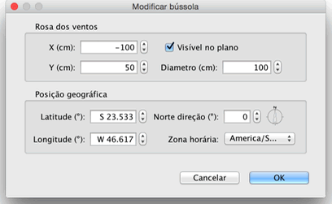

| Editando bússola e localização geográfica | |||
Cada nova casa exibe uma bússola no canto superior esquerdo do seu plano. Como outros elementos do plano, que pode ser movido com uma operação de arrastar e soltar após selecioná-la. Quando a bússola é o único item selecionado no plano, você pode redimensioná-la ou alterar a direção do Norte, com seus indicadores.
|

|
Quando o ponteiro do mouse está sobre um desses indicadores, ele muda para indicar que você pode arrastar e soltar esse ponto. A rosa dos ventos e a localização geográfica da sua casa também podem ser editadas graças ao seu painel, apresentado com um clique duplo na rosa dos ventos no plano de casa, ou escolhendo Plano> Modificar bússola... fora do menu.  No painel de bússola, você pode mudar a localização, o diâmetro, a direção norte da bússola e definir se deve ser exibida no plano ou não. Você também pode escolher a latitude e a longitude da localização geográfica da origem e do fuso horário da sua região. |
|